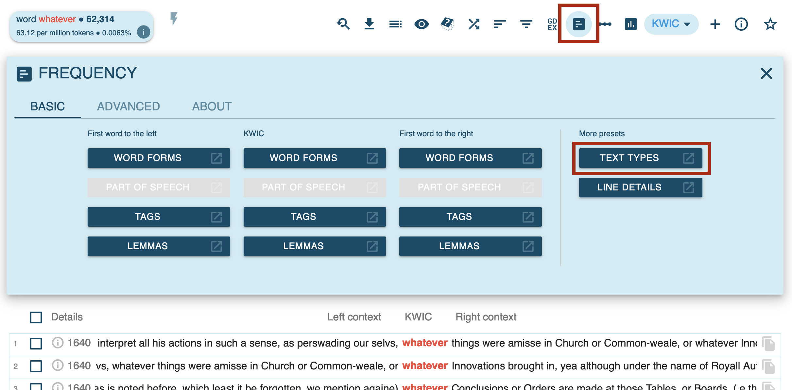

Sketch Engine Tutorial - Web
Tutorial materials
You can find all materials on this GitHub repo: https://github.com/wuqui/SkEtut
- website: https://wuqui.github.io/SkEtut/
- slides: https://wuqui.github.io/SkEtut/SkEtut_slides.html
- data: https://github.com/wuqui/SkEtut/tree/main/data
- results: https://github.com/wuqui/SkEtut/tree/main/export
I will continue to work on these materials and would appreciate questions, comments, and contributions via mail or on GitHub.
General information
What is Sketch Engine?
Main features
corpus management
- creating corpora from your own data
- hosting these corpora online
- annotating corpora
- sharing your corpora
. . .
corpus analysis
- access to many pre-loaded corpora
- simple and complex queries
- concordances
- collocation analysis
- text type analysis
Resources
Compiling corpora
Data format
https://www.sketchengine.eu/guide/create-corpus-from-files/
texts without annotations: most common
- structure: (ideally) use 1 document per file
- file formats: plain text
.txt.csv- …
annotated texts:
.xml: powerful, but more involved
Raw data
Text files
Melville: Moby Dick – available as part of Project Gutenberg
Tabular data
- extract the column containing the text body from your spreadsheet (e.g. in new sheet)
- export this column to
.csv - you can then import this column in SkE just like a
.txt
Note, however, that (meta)data in other columns will be lost1.
Uploading files
Adding and editing metadata
Processed data
After compiling: vert (‘vertical’) format – word per line (WPL)2

Analysing data
Dashboard
Available corpora
Browse full list of (English) corpora here.
Among others, …
- English Historical Book Collection (EEBO, ECCO, Evans): ‘historical corpus collection of English books published in the UK and the USA between 1473 and 1820’
- Gutenberg Project: large book corpus; also available for other languages
- British National Corpus (BNC): ‘A balanced English corpus of samples of a written and spoken language of British English from the later part of the 20th century (1969–1994)’
- English Web 2020 (enTenTen20): big web corpus, including metadata about topics, genres, and web domains (e.g.
.comvs.co.uk) - Timestamped JSI web corpus 2014-2021 English: huge diachronic web corpus, annotated for topic, sentiment and more
Subcorpora
You can create subcorpora for pre-loaded and self-compiled corpora based on
- all available metadata categories (e.g. timestamps, topics, filenames)
- concordance searches
Queries
You run queries from the Concordance view.
There are two options:
- basic searches: basic
- advanced searches: more involved and powerful (e.g. searching for constructions based on lemmatized forms or word classes)
Basic queries
Advanced (CQL) queries
Helpful: manual and CQL builder.
Extracting parts of your query matches using within:
Filtering by metadata
Options:
- query metadata within CQL syntax (e.g.
[word="bank"] within <doc topic="recreation" />) - perform ‘text type’3 filtering using the dropdown menus, which is also available for simple queries (see above).
Concordance view
Collocations
Additional measures (e.g. log likelihood) and other options are available in the advanced settings.
Word sketches
Word sketch difference: between two words/phrases
Word sketch difference: between two subcorpora
Visualizations
Annotating data
for metadata: see Figure 1 above
for concordance lines:
Exporting data
Almost everything can be exported:
- your entire annotated corpora
- results from queries/concordances
- results from collocations
- results from word sketches
I recommend exporting data in .xlsx format, since this seems to be best supported by SkE.4
Use cases
Studying syntactic constructions: the N BE that
Select pre-loaded corpus: Gutenberg English 2020
Query inspired by: Schmid, Hans-Jörg, and Annette Mantlik. 2015. ‘Entrenchment in Historical Corpora? Reconstructing Dead Authors’ Minds from Their Usage Profiles’. Anglia 133 (4): 583—623.
Search for target construction
Get frequency distribution of nouns in target construction:
Distribution across all authors in SkE:
Plot in exported Excel file:
Individual analysis on Samuel Pepys’ works:
Results for Samuel Pepys:
Comparing collocational profiles
corpus: enTenTen20
method: for the lemma bankn, get word sketch differences between texts with recreation and business as topics
Results:
Investigating frequency over time: the rise of whatever
corpus: English Historical Book Collection (EEBO, ECCO, Evans)
- Identify words that have significantly increased or decreased in frequency over time using the trends feature:

Results:
- Investigating the frequency increase of whatever:

Results:
Plotting the exported version in Excel:
Footnotes
To preserve these data, you would have to convert your tabular data (
.xlsxor.csv) intoxmlformat before importing.↩︎More precisely: one token per line, including puctuation: e.g.
it, ‘'s’,,.↩︎‘Text types’ in SkE are not text types in the linguistic sense, but in the technical sense: documents have different text types if they differ regarding any metadata category. For example, two ‘types’ could be texts tagged for
<doc year="1900">vs<doc year="2000">.↩︎When exporting to
csv, be careful with decimal/thousands separator: when using theText to columnsoption in Excel, use.as decimal and,as thousands separator (e.g. one thousand point five:1,000.5).↩︎